An autonomous workforce for the orchard
Tully builds and operates robots that thin, harvest and prune high-value tree crops, and sells the finished work as a service. We start with apples.
See the machine work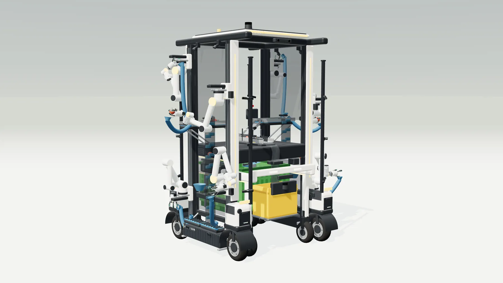
A global autonomous workforce for orchard work
Tully aims to build the largest global autonomous workforce for recurring manual work in orchards, in response to an escalating labour crisis. Seasonal workers are increasingly scarce and labour costs keep rising, consuming up to 40 % of production expenses in fruit farming.
Tully addresses this €60 billion annual labour cost with an autonomous robotic system for recurring manual work across the orchard production cycle: harvesting, thinning and pruning.
Instead of selling complex machinery, Tully runs an Outcome-as-a-Service model that targets the grower's recurring labour budget and delivers guaranteed agricultural results with more predictability and quality. Tully expands through regional operations centres that combine sales, deployment and service, and keeps fleets busy across crop calendars. Strong unit economics, high projected gross margins and a low setup barrier make it a scalable automation platform for dense regional orchard clusters worldwide.
Labour cost
€60 billion a year of manual work in orchards; €21 billion of it in apples.
Obtainable market
462,000 ha of apples and a €4 billion labour pool in nine countries.
Per robot and season
€227,909 revenue and €195,658 gross profit, over 85 % margin.
Payback
A €260,000 system reaches ROI after 1.3 years and runs for 10+ years.
For the farmer
€5,576 per hectare, against €6,195 for a Pluk-o-Trak team.
The round
€3.5 million for 24 months and two growing seasons.
Every apple sold fresh was still picked by hand
The orchard labour problem
Orchards still depend on large amounts of seasonal manual labour at crucial points in the production cycle, harvesting above all: every apple sold fresh in a supermarket was still picked by hand. Yet this workforce is getting harder to secure. Western European growers have historically relied on workers from countries such as Poland, Czechia and Romania. The European Commission states that Europe's structural demand for seasonal work is no longer fully met by EU workers, and Germany's migration authority reports declining interest among Polish and Romanian workers as conditions at home improve and agriculture competes with construction, tourism and other sectors [1], [2].
The United States faces the same pressure. The OECD reports growing agricultural worker shortages: demand for H-2A visas for temporary farm workers rose by 266 % between 2010 and 2019 [3].
Apple prices are largely set by the market, so growers have little room to pass on rising labour costs. In the US, wages and contract labour were 40 % of expenses for fruit and tree-nut farms in 2022, against 12 % across all farms [4].
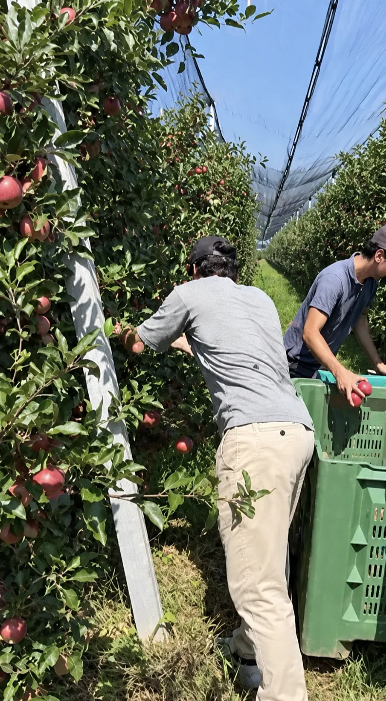
Outdoor high-value crops and apples
Orchard production combines delicate, high-value produce with variable field conditions, which keeps much of the work manual. The market covered here is apples and other pome fruit, avocados, stone fruit and citrus, with recurring tasks such as pruning, thinning and harvesting. Berries, outdoor field vegetables and greenhouse production are outside it.
Orchards spend €60 billion a year on manual labour, across 20 million hectares and more than 10.3 billion hours of field work in hard outdoor conditions. Citrus has the highest production volume, but apples take the most effort: roughly 650–700 hours of manual work per hectare per season. That makes apples the largest single-crop labour pool, with €21 billion spent on manual work.
Farmers and cooperatives
Farmers manage orchard work all year and bring in seasonal teams for labour-intensive tasks such as thinning and harvesting. Even when enough workers are available, organising them adds a lot of work beyond wages: recruiting through agencies, arrivals, employment administration, accommodation, transport and daily supervision. Accommodation can itself cap capacity; one grower Tully interviewed named housing as a major constraint despite being able to recruit.
Cooperatives handle much of what happens after harvest: shared sorting machines, storage, grading, packing and marketing. Growers stay responsible for producing and harvesting the fruit. Farmers' associations such as the Südtiroler Bauernbund help with administration, for example through the AgriJobs platform, labour-law advice and payroll documentation, which shows how much overhead it takes to get help through the season.
Selling finished orchard work, not machines
Tully aims to build a global autonomous workforce for outdoor high-value crops, starting with thinning and harvesting for apples, making demanding orchard work dependable and economical, with smaller teams supervising robotic fleets instead of spending long days on repetitive manual tasks.
Who is Tully
Tully's founding team combines company building, computer vision and robotics deployment.
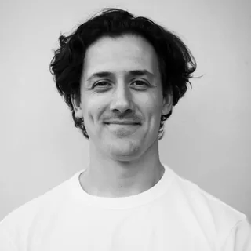
Co-founder & CEODaniel Sattel
A second-time founder who scaled an IoT mobility company to seven-figure revenue. Leads company building, fundraising and commercialisation, translating farmer needs into customer relationships and a viable business.
Harsh Munshi
More than 15 years in computer vision, including perception for autonomous systems. Leads the technical architecture, connecting perception, robot control and on-board computing into one reliable system.
Raphael Joppi
Experience taking robotic systems from concept to deployment, and a family background in apple farming. Leads product development, turning orchard workflows into requirements and engineering decisions into field performance.
Expertise across agriculture and robotics
Tully is also assembling an advisor group around three critical capabilities: apple automation, agricultural machinery commercialisation and advanced robotics.
Dr. Ines Hanrahan
Executive Director of the Washington Tree Fruit Research Commission, with more than ten years in tree-fruit robotics research and grower needs. Challenges our picking and fruit-quality benchmarks, guides meaningful field trials and helps make sure technical progress turns into useful orchard work.
A reliable workforce every season
The autonomous workforce Tully builds is a set of robotic systems that automate manual work at the trees, such as thinning and harvesting, and navigate the orchard rows on their own. Tully builds them from commercial off-the-shelf components, integrates them and trains the algorithms to do the tasks reliably.
The robots are offered as Outcome-as-a-Service: farmers buy completed orchard work against agreed requirements for timing, output and fruit quality. Farmers keep control of seasonal planning, deciding which work is needed, where and when. Tully deploys, operates, supervises and maintains the machines, starting with thinning and harvesting.
This matters because farmers must keep working capital for labour, inputs and running the orchard, and large equipment purchases compete with those needs. Renting, leasing or borrowing spreads the cost, but no farmer will take on that commitment before a robot has proven its reliability and value. A service lowers the commitment and puts responsibility for performance with Tully.
Preparing for thinning today means securing workers, arranging accommodation and meals, handling administration and supervising the work. A mobile work platform costing about €80,000–120,000 supports this but still needs people, and illness or departures mid-season disrupt the plan. With Tully, the grower places one order for the blocks, timing and thinning requirements, and Tully organises and delivers the work, including supervision, maintenance and recovery. Pricing is a familiar hourly rate against agreed performance, so it compares directly with existing labour costs.
Apples first
Apple production has the largest labour cost, and one fruit lets Tully optimise the system for its quality requirements and workflows before moving to other crops. Tully's obtainable market is the labour market in western European and North American apple orchards: more than 462,000 hectares, 236 million manual hours a year and a €4 billion labour pool across the United States, Canada, Italy, Germany, Austria, France, Belgium, Poland and Spain.
Apple growing is also concentrated in dense regional clusters that share climate, labour pools, cooperatives, storage and machinery. Washington produces about 68 % of US apples, and Poland, Italy, France and Germany concentrate 75 % of EU production in dense areas [5]. That lets Tully run robots, operators, maintenance and spare parts from regional operations centres with short travel and high fleet utilisation.
Annual spend on manual work
Outdoor high-value crops: apples and other pome fruit, avocados, stone fruit and citrus. Obtainable market: apple orchards in the United States, Canada, Italy, Germany, Austria, France, Belgium, Poland and Spain.
The integration opportunity
While seasonal labour has become scarcer and dearer, robotics and AI have crossed the threshold of commercial readiness. Industrial robot arms now cost in the low five figures, and edge-computing performance per dollar has grown about 50 % a year [6]. Together with market-ready off-road navigation stacks and mobile bases, this lets Tully assemble, iterate and deploy physical systems more cheaply than ever, which was the main pitfall for earlier attempts.
Validation from the field
In more than 30 conversations with farmers, cooperatives, market experts and research centres, the picture is clear: the market does not just want a reliable automated solution for labour-intensive orchard work, it needs one. Whether a 1.5 ha grower in South Tyrol, a 120 ha farm in Washington or the largest growers in Brazil, seasonal labour is scarce and getting more expensive everywhere. Several farmers have committed to testing Tully's solution in their own fields.
“Automating the manual work would revolutionise the complete market.”
“Even if you can only automate one part of my manual work, the machine would run right now in my fields.”
To validate technical feasibility, the team built computer-vision pipelines and simulation environments covering sensor input, apple detection and localisation, robot approach and a simulated picking process. The next milestone is the first physical prototype, deployed during the coming thinning period.
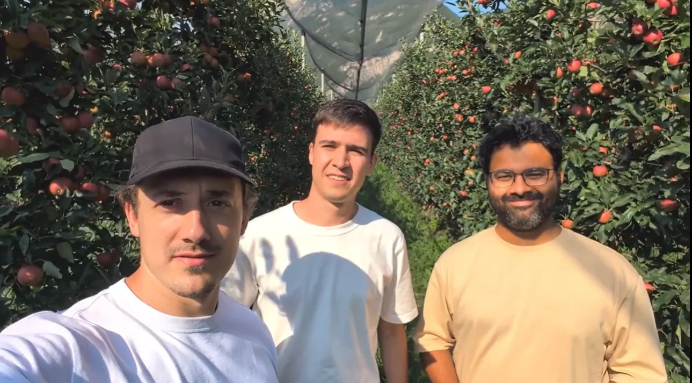
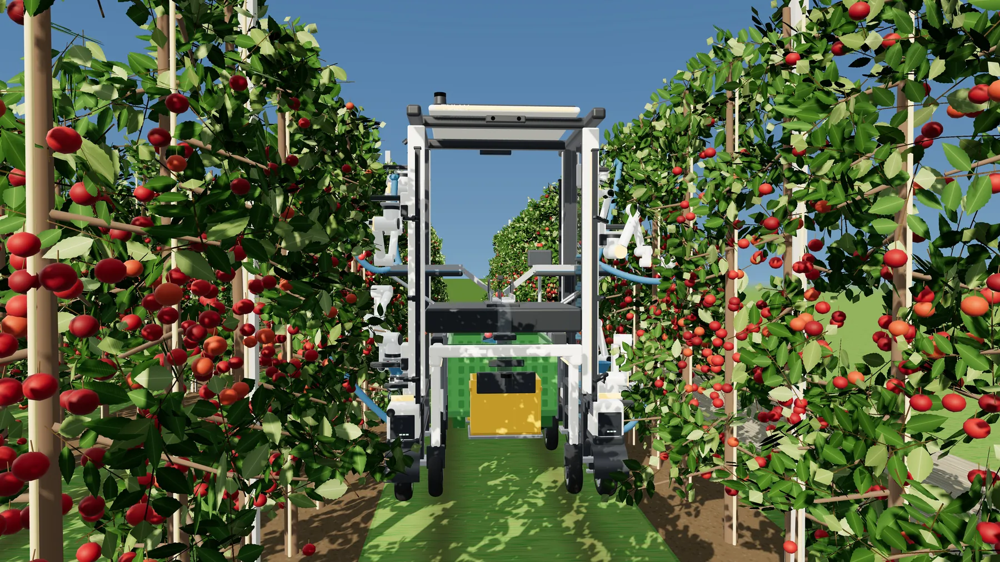
Built for speed and quality
Tully builds a company that delivers on two extremes: exceptional development speed and uncompromising operational excellence. Headquarters are in Munich, but development happens with hands dirty in orchards at Bodensee and in South Tyrol, testing early, failing fast and iterating within hours, always measured by task completion in real orchard conditions.
Once performance meets commercial requirements, the focus moves to reliability. Agreed timelines and quality cannot be compromised, and Tully carries the responsibility when its robots fail, including intervention, recovery and restoring service. Every field intervention feeds back into engineering to remove recurring failures and reduce the need for supervision as the fleet grows.
Scaling through regional hubs
Each hub brings fleet deployment, field supervision, maintenance and local sales together, keeping travel short and intervention fast. Each runs as a profitable operating unit responsible for its fleet, customer commitments and local costs. Once one hub delivers reliably and profitably, the model is replicated in other regions, while engineering stays at the Munich headquarters. Thinning and harvesting extend each fleet's season, and the Southern Hemisphere adds seasons that complement northern operations.
How Tully scales
Development speed: iterate in orchards in South Tyrol and at Bodensee until the machine meets commercial requirements
Operational excellence: one regional hub delivers reliably and profitably, with Tully carrying operational responsibility
Replicate the hub in new regions and the Southern Hemisphere, with engineering shared from Munich
Twice the daily output of a picking team, at a lower cost per hectare
The manual benchmark
The key metric is the tree-to-bin workflow, on which the robot is benchmarked against the human workforce. Tully uses four indicators: accepted kilograms per working hour, daily yield, days per hectare and fully loaded cost per hectare, which includes costs such as accommodation and recruitment.
The state of the art is a mobile lift with integrated conveyor belts, such as the Munckhof Pluk-o-Trak. Six workers on the machine achieve 700 kg/h, 7 t a day and 7.4 days per hectare, at €840 a day in total.
The robotic threshold
Tully's commercial target is to match human tree-to-bin output per day at the same quality and a lower cost, including failed and damaged attempts, repositioning, bin changes, battery swaps and downtime. Robots are expected to work 20 hours a day instead of a worker's 8–10, with supervision, remote support, maintenance, energy and logistics built into the operating model.
A worker on a mobile lift averages 5.6 s per apple, tree to bin. Research projects have matched or beaten this per robotic arm with acceptable damage: Zhejiang University of Technology reported 4.8 s per arm, and Michigan State University 5.9 s [7], [8].
Tully against a Pluk-o-Trak team
| Metric | Tully | Pluk-o-Trak |
|---|---|---|
| Workers or robotic arms | 8 | 6 |
| Harvesting speed, whole system | 0.7 s | 0.9 s |
| Operating hours per day | 20 | 10 |
| Harvested per day | 15.9 t | 7 t |
| Days per hectare | 3.3 | 7.4 |
| Farmer cost per hectare | €5,576 | €6,195 |
Try the model
The system in development: off-the-shelf cobots picking at human speed per arm.
One season of robotic economics
One robot operating in South Tyrol, at human-equivalent picking speed per arm, built mainly from off-the-shelf components.
| Metric | Value | Comment |
|---|---|---|
| Operating days per season | 133 | 7 months of thinning and harvesting, 19 days a month |
| Hectares per season | 41 | |
| Operation cost per season | €6,251 | Field and remote support, transport, energy, connectivity |
| Maintenance and machine cost per season | €26,000 | About 10 % of the robot price |
| Revenue per season | €227,909 | At 85 % uptime, included in the harvesting performance |
| Gross profit per season | €195,658 | Over 85 % gross margin |
The robotic system costs €260,000 and reaches ROI after 1.3 years; one robot can be expected to run for 10+ years on a yearly maintenance budget of 10 % of its cost. A fully optimised system, with custom actuators and manipulators developed in-house, would cost about 30 % less while nearly tripling output to 114 ha a season and €633,000 of seasonal revenue per robot. That is out of scope for now: development speed and commercialisation come first.
Scaling to €100M ARR
At €100 million in annual revenue, Tully's fleet would harvest about 18,000 ha a year. Focusing only on farms in South Tyrol and Germany, this fleet would still serve only about 30 % of those regions.
| Metric | Value |
|---|---|
| Autonomous robots | 440 |
| Harvested area per year | ≈ 18,000 ha |
| Share of the obtainable market | 3.9 % |
| Share of the global tree fruit market | 0.08 % |
| Regional field operations team | ≈ 50 people |
A compact footprint with room to grow: more acreage in existing regions, new regions, and pruning and other high-value crops.
Picking an apple is solved. Picking every day, all season, is not.
From feasibility to commercialisation
Research and field trials have shown the core capabilities of robotic apple harvesting. The commercial challenge is to combine them into one system that sustains performance through a working day and a whole season in real conditions, meets quality and performance requirements, and keeps the cost affordable for farmers.
Lessons from earlier attempts
Abundant Robotics combined computer vision, vacuum picking and fruit conveyance in a dedicated harvesting machine. Despite showing that it could pick apples, the company closed in 2021 after insufficient commercial traction and unsuccessful fundraising. Its successor described the inherited prototype as over-engineered and expensive to produce: simplicity and fast iteration are essential [9], [10].
Agrobot built a large strawberry-harvesting platform with up to 24 independent picking arms, fruit perception and selective stem cutting. Tully's interview with its founder highlighted how hard it is to develop manipulation, navigation, the vehicle and outdoor reliability at the same time. Capable picking technology needs a manageable development scope and a credible route into commercial operations.
Competing approaches today
| Company | Approach | Status and assessment |
|---|---|---|
| Tevel | Picking drones flying from a mobile platform; selective harvesting by suction, fruit delivered into on-board bins | Good marketing and reported orchard deployments; experts state limited compatibility with apple orchards |
| FFRobotics | Mobile platform with several telescopic arms and mechanical gripping; on-board conveyance; harvesting focus | Field tested; experts and insiders report limited financial resources and limited performance |
| Advanced Farm | Mobile platform with robotic arms and suction gripping; on-board conveyance and bin filling | Over $34M raised; CNH bought its assets and IP in 2025 after it failed to show commercialisation, following an early focus on strawberries and a pivot to apples |
| Picker | Flexible hollow picking arm mounted on existing machinery; cuts stems and passes fruit through the arm toward a bin | Testing with citrus and avocado in ongoing field trials |
Follow one apple through the machine
The autonomous harvesting system is the foundation of an autonomous orchard workforce. At its core is an autonomous mobile platform with eight robotic arms, visual perception pipelines and an internal fruit-handling line.
Modularity is a central design principle: one platform performs several tasks (harvesting, thinning and pruning) across several crops (apples, pears and citrus) instead of needing a single-purpose machine for each. Robust middleware and standardised communication protocols support this. Commercial off-the-shelf components, wherever they exist, keep R&D spending and capital risk low and shorten the path to the field.
This chapter describes harvesting, even though thinning is the first step to field deployment. Harvesting adds to the perception pipeline and needs a fruit transport system, so thinning is a sub-system of the same machine rather than a different robot.
Scroll on to watch the simulation model work while the process diagram beside it shows what the machine is doing at that moment. The simulation model uses the same eight-arm architecture with a straddle body and docked bin units; the first field machine will be built on a Frucotec orchard platform.
Tully H2 Cobot harvester · Rev 1
8 six-axis cobots on height carriages and in/out slides, a 1.9 m bidirectional body that crabs into the next alley, an on-board sorter and two autonomous straddle carriers that loop through a depot. Built to turn in a 2–3 m headland.
One platform, eight arms
Eight arms ride four vertical rails around an internal fruit line. Every camera writes into one shared state model of tracked apples; one scheduler hands out targets; each arm runs its own real-time node. If an arm faults, the others take over its zone.
Driving the alley
The platform follows the row on its own with RTK-GNSS and LiDAR, crawling slowly enough for every arm to keep working. The map shows where the machine and its bin units are in the block right now.
Seeing every apple
Colour and depth cameras on the corner masts look forward along the canopy, so each apple is seen from several angles before an arm arrives. Every view feeds one state model: an apple with a stable ID, a 3D position, colour, size and stem direction.
The pick cycle
Each arm repeats the same cycle: a collision-aware transit to a 15–25 cm standoff, a visually servoed approach, colour and shape verification, a grip with contact verification, detachment and release into the transport tube. The highlighted state is what the arm on screen is doing now.
Cut, or skip and flag
When the stem can be seated, a guarded scissor cuts it, leaving a short, intact stalk that cannot puncture other fruit in the bin. There is no twist and pull: when a stem cannot be cut, the hand lets go, backs out and flags the apple as a hard case for hand-picking. The counts are from this simulation run.
From hand to bin
Picked fruit descends through a soft tube to a buffer belt, then passes a 360° camera sorter. Premium apples are lowered gently into the bin, which follows its fill level; industrial fruit goes to its own container.
Bins that drive themselves
The 300 kg bins flow through the orchard independently of the harvester. When a bin is full, its unit decouples, drives to the staging area, picks up an empty bin and comes back, while buffers on the master keep the arms picking.
Turning at the row end
At the end of a row the arms stow, the machine drives clear of the canopy and moves into the next alley. Each step lights up as the machine works through it.
Through the night
Work lights and the lights in each hand let the machine keep picking after dark, which is how it reaches 20 operating hours a day. The panel shows the live energy draw.
Technical details
Software architecture and compute
Three principles govern the software. First, all perception pipelines write into a single shared state model, which holds tracked fruit with stable IDs, grades and approach vectors alongside the canopy occupancy grid; one global scheduler owns task allocation. Second, each robotic arm runs independently on its own real-time node for inverse kinematics, trajectory generation, visual servoing and grasp state, and completes its assigned targets without further negotiation. Third, the system is fault-tolerant: if an arm hits a fault, such as an unreachable target, the machine keeps working at a reduced rate and its work zones are redistributed.
Control and computation run on a hybrid architecture: an NVIDIA Jetson AGX Orin and a Beckhoff CX7000 PLC. AI inference, neural vision pipelines and global motion planning need the parallel compute of the GPU, which cannot guarantee non-preemptible determinism. The PLC runs the deterministic real-time control loops, enforces safety-rated interlocks and keeps actuation reliable independently of the AI stack.
Stages communicate by publish/subscribe over bounded queues and share no state. Several loops run at their own rates, so no stage waits on another. Because every stage already publishes to the bus, observability and data capture are just another subscriber: telemetry, a black-box recorder for offline replay, GNSS-tagged yield and grade data per row and bin for the grower, and automatic capture of hard cases for retraining.
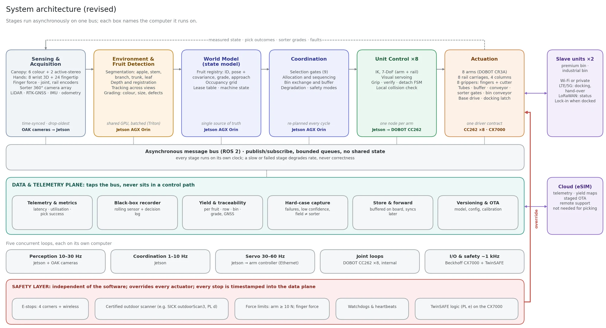
Orchard navigation
To work in orchards, the system must navigate the fruit rows. The chassis must meet agricultural constraints that indoor automated vehicles never face: instead of flat floors and controlled lighting, orchards bring unpaved terrain, lateral slopes, changing soil friction and variable weather.
The first solution uses a platform from Frucotec, developed for apple orchards; the team has offered full access to and support for the vehicle. Autonomous navigation comes from Nature Robots, whose lightweight solution for vineyards, which share the row architecture of apple orchards, includes industrial-grade compute, RTK-GNSS and LiDAR [11]. Other platforms and navigation systems will be benchmarked too. The footprint slightly exceeds a euro pallet for compatibility with standard bulk bins and freight, while staying manoeuvrable in high-density orchards. Field-exposed components are rated IP65 or better.
For reach across the whole canopy, each side of the harvester has two 2.5 m vertical rails, each carrying two articulated arms: eight manipulators in total. The rails move the arms vertically; with the arm reach, the system covers the full height of standard 3 m trees.
Camera stack
Besides the cameras in the hands, the machine carries twelve perception cameras. Six colour and two depth cameras sit on one slim mast at each leading corner; two look-ahead cameras map the canopy before the masts reach it, and two look-back cameras check the canopy the arms have just worked. The gap between the machine and the leaves is only about 0.45 m, so all cameras are yawed about 30° outward from the driving direction. The line of sight to the canopy grows to about 0.9 m, the arms and columns stay out of view, and each apple passes through every camera's view from several angles as the machine advances.
| Role | Camera | Count | Position, per side |
|---|---|---|---|
| Canopy colour, bottom / middle / top | Luxonis OAK-1 PoE, 12 MP, IP67 | 6 | Corner mast at 0.55 m, 1.45 m and 2.30 m; portrait |
| Canopy depth | Luxonis OAK-D Pro PoE, active stereo, IP65 | 2 | Corner mast at 1.25 m |
| Look-ahead | Luxonis OAK-1 PoE, IP67 | 2 | Front corner, about 1.6 m, looking forward along the canopy: fruit load, obstacles and the row end, ahead of the arms |
| Look-back | Luxonis OAK-1 PoE, IP67 | 2 | Rear corner, about 1.6 m, looking back along the canopy: fruit left behind, damage and flagged hard cases |
| Wrist | 3D camera with lights in each gripper | 8 | Centre of the hand |
| Fingertips | Miniature RGB | 24 | Three per hand |
| Sorter | RGB cameras, diffuse LED tunnel | 4 | Sorting module, 90° apart around the fruit: one 360° view |
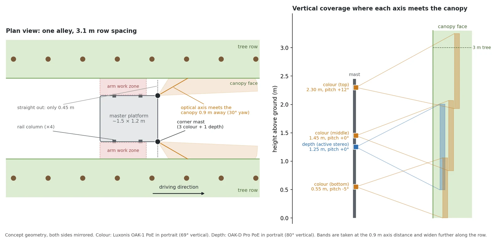
Perception pipeline and target selection
Once the base enters the orchard and detects the first tree, the perception pipeline starts: the machine senses the canopy, detects and characterises fruit, accumulates it in a state model, decides what each unit does next, executes and observes the result. No stage waits on another.
The perception and control stack is a sequence of layers, pipelined so the acquisition layer already works on frame t+1 while planning works on the world state from frame t. Calibrated cameras stream to a central compute hub, where frames are normalised and batched into one [N, 3, H, W] tensor; a dropped frame is filled with the previous one or the batch profile is adjusted. A real-time instance-segmentation model served on NVIDIA Triton (YOLO-seg family, RT-DETR with a mask head, or a student distilled from SAM-generated labels) returns each apple's mask, box, confidence and centre, and also segments stems, branches, trunks and leaves. Branches feed collision avoidance; stems feed orientation. Depth is read directly from the depth sensors.
Everything below segmentation writes into the state model: a registry of tracked apples, each with a stable ID, a filtered 3D position and accumulated characteristics. Combining views over a short time gives much better diameter and occlusion estimates than any single frame. Colour is measured in the CIELAB a* channel after masking highlights, shadows and leaves; size comes from RANSAC sphere fits on depth; orientation from stem segmentation, ellipse fitting and the calyx depression. Candidate approach vectors are sampled over a hemisphere around each fruit and checked by ray-casting a gripper-sized cylinder through the occupancy grid.
The machine visits a subset of targets within a time budget to maximise collected value. Apples that are hard to grasp or below the wanted quality are skipped, using leading indicators: colour threshold, size, visible defects, stem and orientation, distance and reach, the approach corridor and the distance to neighbouring fruit. A combined threshold selects or rejects each apple, and fast rejection is the key. The task planner then sets the pick sequence from the current state model and recalculates on every cycle, because the orchard changes with every harvested fruit and every metre the platform advances.
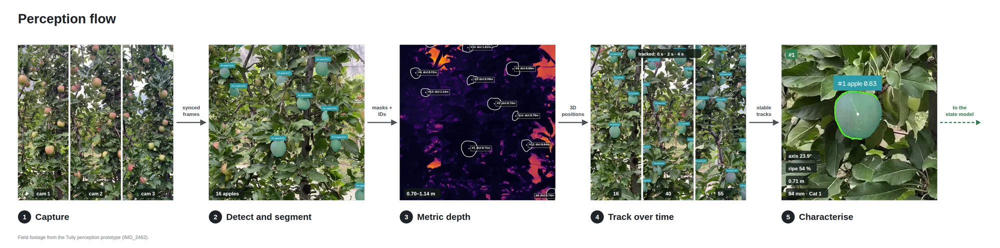
Fruit retraction: pick cycle and motion control
Eight 6-DoF cobot arms do the picking, two on each of the four rail columns; with the 2.5 m rails and the arm reach they cover the whole fruiting wall up to 3 m. The cycle has six standard phases:
- Collision-aware transit from the home pose to a 15–25 cm standoff
- Visually servoed linear approach
- Colour and shape verification
- Gripping and contact verification by force–torque feedback
- Cultivar-specific detachment
- Release into the transport tube
Inverse kinematics uses the redundant seven-axis chain (six arm joints plus the rail) to keep the elbow away from the canopy and the joints away from their limits. Jerk-limited, time-optimal trajectories keep the platform and cameras steady, and an occupancy grid built from depth frames and labelled with branches and trunks protects the arm from structural obstacles.
Open-loop motion from long-range observations is prone to estimation errors, so the final approach switches to image-based visual servoing. A wrist-mounted camera tracks the target; a lightweight network finds the fruit's centre and apparent radius in a cropped region, and the controller drives the offset and radius error to zero at 30–60 Hz, streaming Cartesian velocity commands to the arm.
Gripper
Commercial agricultural end-effectors have clear limits, so Tully is developing a specialised multi-finger gripper. It has three tendon-driven gripping fingers and a central cutting finger with a guarded scissor. Each gripping finger carries a miniature RGB camera that checks the colour of the hidden back of the apple; if it fails, the apple is released and logged for a later pass. A 3D camera and lights at the centre enable visual servoing and night work.
Manual harvesting relies on a two-handed twist. The robot grasps and cuts in one motion instead, which prevents stem pull-out and allows an immediate hand-over to transport. Cutting also removes rigid protruding stems, as in 'Fuji', that puncture neighbouring fruit in bulk bins, which cooperatives reward financially.
There is deliberately no twist-and-pull fallback, which risks damaging the fruiting spur, pulling the stem out and shaking neighbouring apples loose. When a stem cannot be seated or the cut fails twice, the hand opens, backs out and the apple is skipped and flagged as a hard case, for hand-picking and for training the next model.
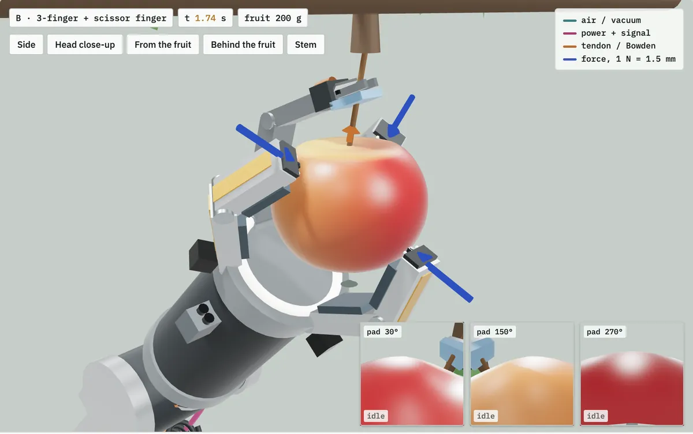
Intra-system fruit transport and sorting
After detachment, fruit drops into a flexible polymer tube beneath the end-effector and descends under control to a central buffer with an active bottom belt. From there a conveyor feeds an inline sorter, a miniature version of a packinghouse grader: four RGB cameras, 90° apart around the fruit, image each apple through 360° and finds defects a few millimetres across, including on the hidden rear. Correct grading avoids heavy financial penalties; faulty apples go to industrial grade, which is also paid.
Premium apples are lowered into the bulk bin by a vertical conveyor whose height follows the fill level, preventing impact damage. These standard bins hold 300 kg and go on to the commercial sorting and storage plants. Industrial apples go directly into a side container, where minor pressure marks do not change their value.
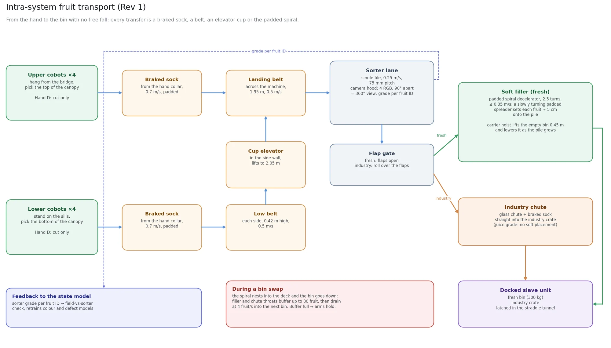
Orchard logistics and the Hive
To keep the harvest going, the 300 kg bins must flow through the orchard independently of the harvester. When a bin reaches its 300 kg limit, the system decouples itself: the master's lowering mechanism retracts clear of the bin, the slave drives autonomously to a central staging area, picks up an empty bin and returns to the harvester without manual intervention. Meanwhile harvesting continues: the master shifts toward the secondary grade and its conveyor lines buffer the fruit picked in between. The buffer is sized for the average transit and docking time, so bin exchange does not stall the arms.
How the interlock works. Master and slave are coupled through three independent layers, and every change of state needs all three to agree. Mechanically, guide cones centre the slave and two latch pins lock it to the master, each pin with two sensors that must agree. A docking connector carries the E-stop chain and the latch signals into the master's TwinSAFE logic, so a stop on either machine stops both. In software, the two exchange their states and a 10 Hz heartbeat over the orchard Wi-Fi or private LTE/5G; LoRaWAN carries status only.
How the slave operates. Docked, it is in follow-me mode: the master leads and the pair moves as one vehicle. Undocked, it navigates on its own with RTK-GNSS, LiDAR and a safety scanner, at up to 1.5 m/s on alleys and the field road and 0.5 m/s near the master, and always yields to the master and to people. A second slave waits on standby behind the master, so a swap never leaves the master without a bin for long.
Conditions for a swap or a move
Each action starts only when all its conditions hold. Start values for field trials.
| Action | Trigger | Conditions, all must hold | Slave | Master |
|---|---|---|---|---|
| Dock | Swap requested, or start of shift | Slave on standby behind the master; docking slot free; master at 50 m/h or less; bin conveyor raised; protective fields clear; heartbeat OK | Drives in at 0.5 m/s or less on the guide cones; locks both pins | Lowers the bin conveyor once both pins report locked |
| Follow | Docked | Both pins locked; connector made; heartbeat OK | Follows the master's speed and steering | Leads; fills bin and industrial container |
| Swap request | Bin at 300 kg, industrial container full, low battery, or operator | None; starts the undock below | Waits for release | Fills to the limit, then buffers on the belts |
| Undock | Swap request | Standby slave in place; no headland turn; filling stopped; bin conveyor raised; buffer has room; exit path clear | Unlocks when released and drives out | Keeps picking into the buffer; the standby docks once the tunnel is clear |
| Move to staging | Undocked with a full bin | Route clear; master not turning in the same headland lane; heartbeat OK | Drives to the staging area at up to 1.5 m/s | Keeps picking |
| Bin exchange | At the staging area | Drop bay free; hoist clear | Sets down the full bin, picks up an empty one | None |
| Return | Empty bin seated | Route clear; headland lane free | Waits behind the master on standby | None |
| Headland turn | Row end | Arms stowed; docked slave latched | Docked: rides latched. Undocked: waits outside the turn lane | Turns into the next alley |
| Stop | Heartbeat lost over 300 ms, E-stop, protective field, latch sensors disagree | Any state | Docked: stops with the master. Undocked: stops and waits | Safe stop when docked; holds the arms if no bin is docked and the buffer is full |
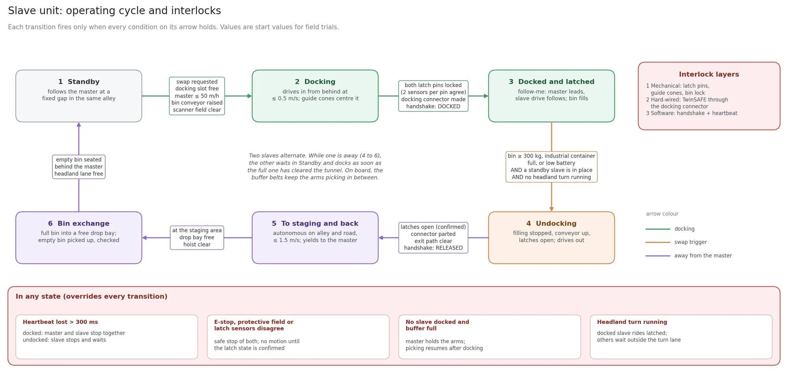
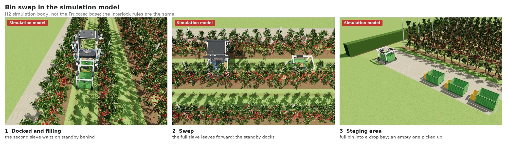
The Hive
The Hive connects every robot in an orchard. More and more of the orchard's work will be done by robots: harvesting, thinning and pruning by Tully's own machines, and drone spraying, irrigation, weeding and mowing, scouting and bin logistics by Tully or by partners. Each machine runs Tully OS on board for perception, autonomy, safety and its task runner. The Hive keeps one map of the orchard, tree by tree; turns the farmer's and agronomist's goals into tasks for the right robot at the right time; shares charging, logistics, connectivity and remote support across the fleet; and opens an API to partner robots and farm software.
The Hive plans; it never sits in a real-time control path, and every machine keeps working safely if its link drops. An eSIM uplink updates the central cloud and gives the farmer a live view of operations, but harvesting does not depend on it.
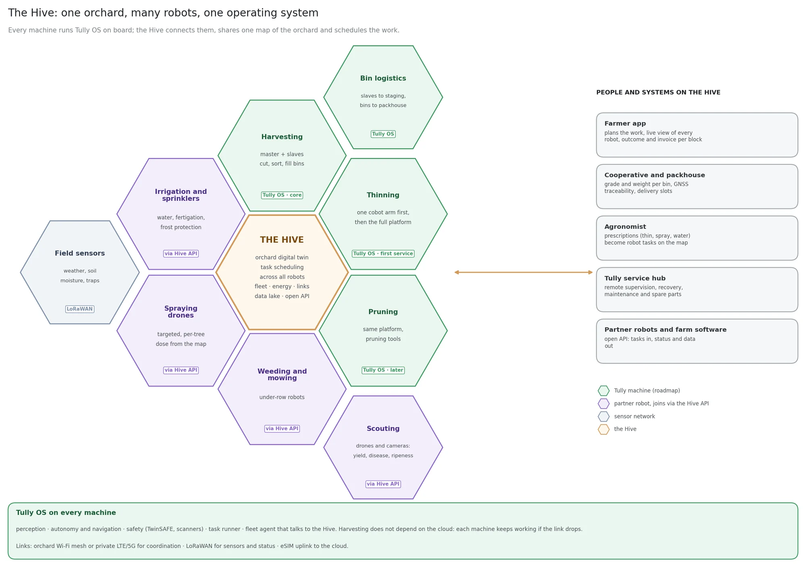
User experience
Farmers order the service in the browser. During onboarding they record their crops, cooperative and orchard area, and draw the geofenced boundaries of their blocks on a map, so the system knows exactly where to operate and navigation needs no manual setup in the field.
The farmer never operates the robot. Tully personnel handle deployment, positioning and start-up on site, and a central remote team monitors every machine. Farmers book and manage service appointments, review farm profiles and follow harvesting progress, yields and quality in real time on the Tully cloud platform. Safety protocols let farm workers and operators work close to the machines.
Full architecture
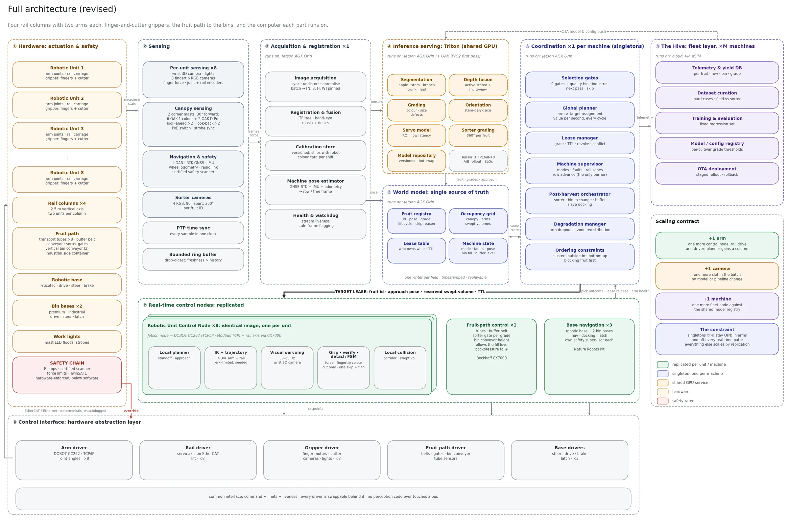
Four years, paced by the apple season
Apple farming runs on an annual biological cycle that sets the pace of development and sales. The modular approach lets components be developed in parallel and integrated fast, so one machine serves different seasonal phases.
Harvesting is the most valuable task to automate and also the most complex. Tully starts with automating thinning, removing excess immature fruitlets, because it is the second most time-consuming task of the year and far less complex. That gets a commercial solution to farmers sooner, and every component developed for thinning is needed for harvesting, which makes it an ideal intermediate milestone. Starting with thinning also lets Tully shape orchards and fruit arrangement for robotic pickability as well as yield.
Because of the seasons, each year has three parts:
Off-season, from the end of harvest to the end of blossom: six months of focused development, new features and technical debt.
Thinning, from early fruit growth until fruitlets reach about 25–30 mm, usually in June: thinning in real conditions, and other tests that need trees in leaf.
Harvesting, including its preparation, from June after thinning until the official harvest window closes: two to three months, the most important phase for harvesting and everything around it, such as data collection.
Year 1Autonomous thinning prototype
Year 2Professional autonomous thinning
Year 3Autonomous harvesting and regional hubs
Year 4Global launch
The current €3.5M round covers years 1 and 2.
Year 1: autonomous thinning prototype
The goal for year 1 is a full prototype with every function needed for thinning by the end of the thinning period. In the first weeks, components are developed and tested one by one: the Frucotec base gets Nature Robots' autonomous driving modules and is tested in dormant orchards, the robot arms are mounted on the columns to detect and cut apples, and thinning gripper prototypes are built. In parallel, the AI models and algorithms, most of which already exist, are improved and tested in the lab on mock fruit walls, and keep being improved all year.
At the latest after blossom, when fruitlets start to grow, everything is combined into one system and tested in the field. Two systems are built for continuous operation and redundancy, and iteration happens directly in the field from then on. As canopy density and fruit size change over the following weeks, the system is calibrated and benchmarked against the season, producing large amounts of data and test cases. The goal is to thin consecutive trees autonomously and move along the rows, in the orchards of pilot customers who also contribute their expertise.
The harvest period is used for baseline tests and data. The thinning components also apply to harvesting, so the system is benchmarked on picking at the Laimburg research centre's test facility, with the goal of less than 5.6 s per apple to validate the speed used in the business case. Together with the thinning results, this quantifies the technical gaps. Orchard data across weather, lighting and night is collected, plus 360° per-apple images from cooperative packinghouse sorting machines.
Year 2: professional autonomous thinning
Year 2 has two stages: turning the thinning prototype into a professional machine for early commercial use in South Tyrol, and extending the system to full tree-to-bin harvesting. In the off-season, every component is refined for field reliability and robustness under continuous operation. Because Tully runs the machines as a managed service, it keeps full control of ongoing refinements.
The thinning service launches in South Tyrol through live demonstrations at trade shows, at cooperatives and with organisations such as the Südtiroler Bauernbund, Coldiretti and the Südtiroler Beratungsring. Farmers book and pay through the Tully website, and machines are built to match the bookings. The thinning season marks the official commercial launch, with an international marketing campaign. Every deployment has at least one member of the core development team on site, other engineers monitor operations and fix issues in real time, and manual labour stays on call in case of downtime.
After thinning ends in June, all engineering goes into adapting the system for harvesting, backed by a media campaign. The first commercial pilots pick industrial-grade apples at the end of the harvest, and another baseline test runs in Laimburg's test orchards.
Year 3: autonomous harvesting and regional hubs
Year 3 has two milestones: a fully autonomous harvesting system that picks Grade A apples, and professional thinning operations run from regional hubs in South Tyrol, Bodensee and Washington. Engineering hardens harvesting for field reliability and autonomy with minimal human intervention, and for usability in the grower's workflow. Thanks to modularity, these are new modules that swap quickly, not a new machine.
Two major components arrive: an autonomous bin transport system, with slave units that swap bins on their own and coordinate over a wireless protocol, and on the master a fruit-flow mechanism to the bins with automated sorting into quality and industrial grade right after picking. With thinning run by the hubs, core engineering focuses fully on harvesting. In the harvest, autonomous harvesting launches internationally with pilot partners, backed by a global media campaign.
Year 4: global launch
The focus shifts to global scale. A commercialisation team verifies demand for thinning and harvesting; once enough is validated, capital goes directly into regional hubs, deploying the same platform in dense regions. The number of hubs depends mainly on available capital, as growers worldwide are already asking for the solution. Organisational growth concentrates on regional operations, hub management and field support. In the harvest, the autonomous harvester launches commercially in every hub region.
Proving performance in the field
for 24 months and two growing seasons
The round funds the first autonomous orchard robot with proven thinning and harvesting performance, and brings the first services into commercial trials with farmers. Development and commercial deployment run in parallel, starting with thinning and industrial apples before validating human-level harvesting speed.
24-month spending allocation
Most of the capital goes to the team that develops, integrates and deploys the robot. Hardware covers robotic arms, platforms, gripper development, prototyping and field testing; available components are used where possible and orchard-specific parts are built in-house. The rest covers external services, certification, software, development tools and company infrastructure.
Team building
The initial hiring plan builds the engineering and deployment capabilities needed to turn prototypes into a commercially usable workforce. Tully prioritises integrating available components, developing specialised hardware where necessary and testing the complete system in orchards, to iterate at the highest pace.
| Function | People | Main responsibility |
|---|---|---|
| Computer vision | 2 | Fruit and branch perception, localisation, robustness across light, occlusion and orchard conditions |
| Robotics | 1 | Integrate perception, motion planning, control, sensors and computing into a reliable robot |
| Gripper | 1 | Develop and validate the end-effector for the highest fruit quality |
| System integration | 1 | Integrate purchased parts and peripherals; hands-on workshop skills |
| Founders associate | 1 | Pilot coordination, grant applications and operations |
Future and outlook
Orchard work will be automated. The question is not when, but who makes it reliable and economical enough for growers to use every season. Growers are already preparing, planting and training trees as narrow, two-dimensional fruiting walls that make fruit easier for machines to see and reach. Available components and demonstrated research performance are the starting point; Tully's task is to turn them into dependable commercial operations.
Beyond labour automation, continuous multi-modal field operations build a proprietary, high-resolution spatial dataset of perception and physical interaction, a foundation for training real-world AI models. Tully's machines can also serve as a physical-AI and world-model test bed for research partners who want to deploy spatial foundation models outside simulation.
Over time, the technology and operational efficiency Tully builds open the way to vertical integration: from service provider to managing or owning large-scale production for retail supply.
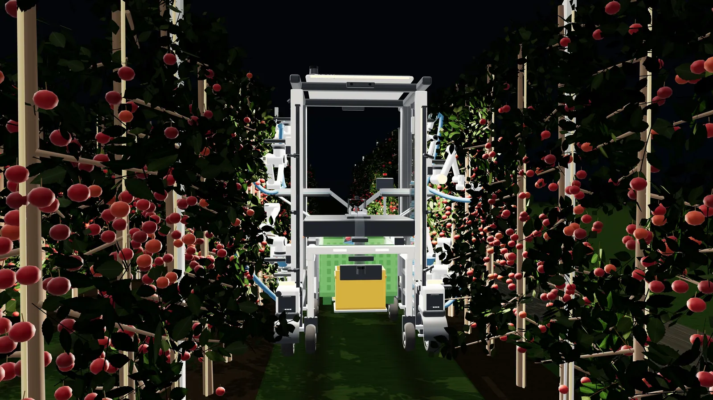
Sources
- European Commission: Seasonal Workers Directive
- German EMN study on seasonal workers
- OECD (2023): Labour and skills shortages in the agro-food sector
- USDA Economic Research Service: Farm labor
- USDA: Advancements in apple picking
- Epoch AI: Chip performance per dollar
- International Journal of Agricultural and Biological Engineering, article 9308
- USDA Agricultural Research Service, publication 426874
- Abundant Robotics closure reporting
- Successor's SEC filing
- Nature Robots: OrchVine Nav
Bill of materials: master and slave
| Master | Amount | Total |
|---|---|---|
| Frucotec base | 1 | €7,900.00 |
| Nature Robots autonomous suite | 1 | €15,000.00 |
| DOBOT CR3A | 8 | €110,400.00 |
| Gripper, thinning and harvesting (incl. ToF) | 8 | €12,000.00 |
| NVIDIA Jetson AGX Orin | 1 | €3,316.14 |
| DepthAI OAK-1 PoE | 6 | €2,000.00 |
| OAK-D Pro (active stereo) | 2 | €1,049.99 |
| Battery, 24 kWh | 1 | €4,000.00 |
| PLC Beckhoff CX7000 | 1 | €747.90 |
| Livox Mid-360 (safety LiDAR) | 1 | €655.42 |
| Internal transport system, 8 arms | 1 | €30,000.00 |
| Sorter | 1 | €5,000.00 |
| Cables, columns and other parts | 1 | €5,000.00 |
| Total | €198,019.46 |
| Slave | Amount | Total |
|---|---|---|
| Frucotec base | 1 | €7,900.00 |
| Nature Robots autonomous suite | 1 | €15,000.00 |
| NVIDIA Jetson AGX Orin | 1 | €3,316.14 |
| PLC Beckhoff CX7000 | 1 | €747.90 |
| Cables, columns and other parts | 1 | €2,000.00 |
| Total | €28,964.04 |